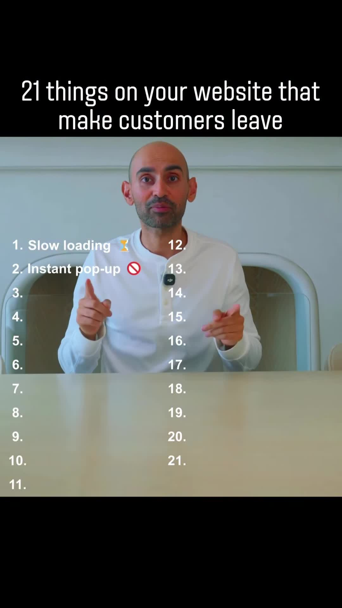
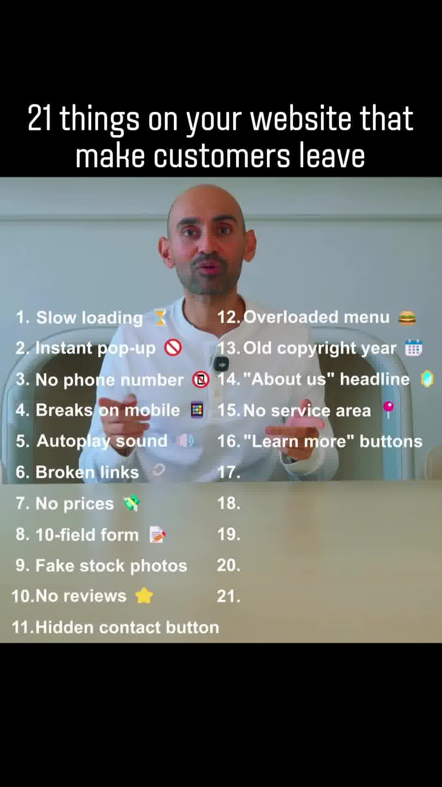
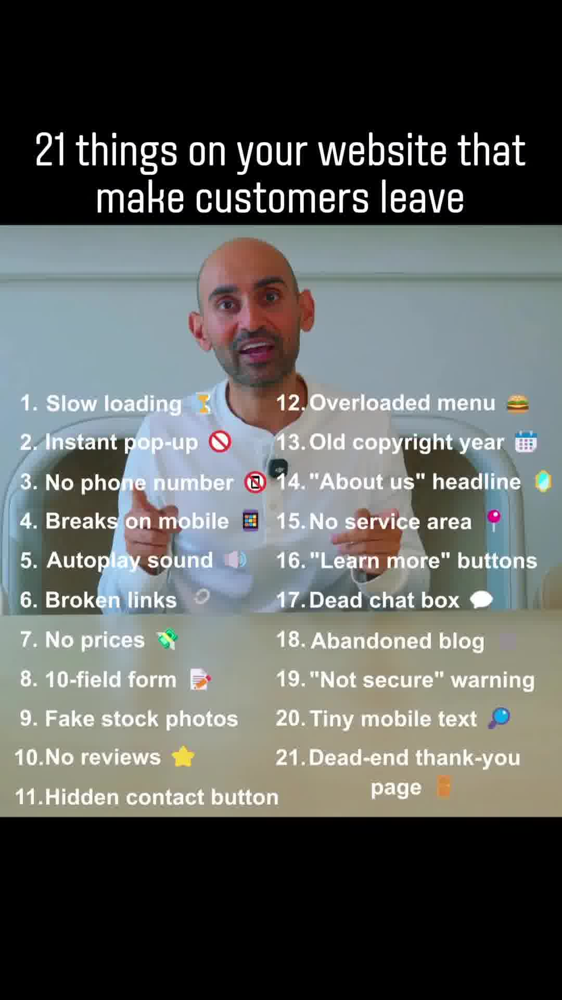
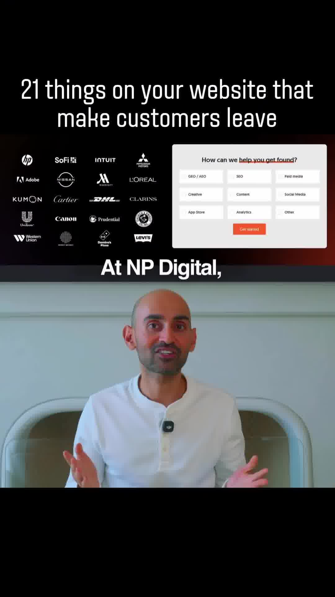

Executive Summary
Driving high-intent traffic to a web property through paid performance media, SEO, or organic social is useless if the landing page leaks prospective buyers. Most bounce rates are caused not by poor core offers, but by subtle micro-friction points, missing trust signals, and hostile UX patterns.
Digital marketer Neil Patel categorizes the 21 most frequent website conversion killers that trigger immediate bounces and erode visitor trust, dividing them across performance, design, copywriting, and technical reliability.
Visual Documentation & 21-Point Audit




The 21 Conversion Killers Breakdown
| # | Conversion Killer | Why Customers Leave | Recommended Engineering / UX Fix |
|---|---|---|---|
| 1 | Slow Loading Speed | 53% of mobile visits are abandoned if a page takes >3 seconds to render. | Optimize Core Web Vitals (LCP < 2.0s, INP < 200ms); compress WebP/AVIF images, defer non-critical JS. |
| 2 | Instant Pop-up | Interrupts the visitor before they have consumed a single paragraph of content. | Delay modal triggers until 50% scroll depth, 30 seconds on site, or true exit-intent on desktop. |
| 3 | No Direct Phone Number | Signifies an anonymous, unverified operation for high-ticket services and B2B. | Place a clickable tel: link prominently in the header and footer. |
| 4 | Breaks on Mobile | Horizontal scrollbars, overlapping cards, or unclickable touch targets. | Design mobile-first with responsive viewport breakpoints and minimum 48x48px tap targets. |
| 5 | Autoplay Sound / Video | Violates user autonomy and creates sensory distress in public/office environments. | Always default video to muted autoplay playsinline with an explicit unmute toggle. |
| 6 | Broken Links (404s) | Signals unmaintained, abandoned infrastructure. | Run automated monthly CI crawlers to catch broken internal links; implement custom helpful 404 pages. |
| 7 | Hidden / Absent Pricing | Forces users to guess whether they can afford the service; creates "contact sales" fatigue. | Provide transparent pricing tiers, starter estimates, or interactive ROI calculators. |
| 8 | 10-Field Form Overload | High cognitive friction reduces form completion rates exponentially with every extra field. | Cut initial forms to 2–3 fields (Name, Email/Phone); collect deeper enrichment data post-submission. |
| 9 | Fake Stock Photos | Cheesy corporate stock imagery destroys authenticity. | Use real photos of your team, office, physical warehouse, or actual client screens. |
| 10 | No Social Proof / Reviews | Buyers require third-party validation before committing payment or booking calls. | Embed verifiable client testimonials, Trustpilot widgets, G2 badges, or video reviews. |
| 11 | Hidden Contact Button | Frustrates motivated buyers ready to reach out immediately. | Maintain a sticky header CTA button or persistent WhatsApp/Contact floating pill. |
| 12 | Overloaded Navigation Menu | Hick's Law: Excessive menu links cause analysis paralysis. | Limit primary navbar to 5–7 top-level links; organize secondary links in a structured mega-menu. |
| 13 | Outdated Copyright Year | Displays e.g. "© 2021", making visitors wonder if the business is defunct. | Use dynamic JavaScript/server-side rendering: new Date().getFullYear(). |
| 14 | Generic "About Us" Headline | Boring ego-centric copy instead of leading with client-centric problem resolution. | Rewrite hero copy to state the specific transformation delivered for the customer. |
| 15 | No Clear Service Area | Local/regional customers leave if they cannot immediately confirm you serve their jurisdiction. | Explicitly list serviced cities, countries, or geographic restrictions in header/footer. |
| 16 | Vague "Learn More" CTAs | Passive and low-urgency; fails to communicate the value of clicking. | Use action-oriented verbs: "Get Instant Access", "Download the Blueprint", "Book Your Audit". |
| 17 | Dead / Unresponsive Chatbot | Opens a chat bubble promising immediate help, only to show "we'll reply in 48 hours". | Either deploy real AI agents that resolve inquiries instantly or remove fake live-chat badges. |
| 18 | Abandoned Blog Section | Last post dated 2 years ago signals that the company is struggling or stagnant. | Either commit to consistent editorial updates or remove visible publication dates from evergreen guides. |
| 19 | "Not Secure" (Missing SSL) | Modern browsers display jarring red security warnings for plain HTTP. | Enforce automated HTTPS redirection and valid TLS certificates across all subdomains. |
| 20 | Tiny Mobile Typography | Font sizes <14px force mobile users to pinch-to-zoom. | Enforce base body font size of 16px with comfortable 1.5–1.6 line height on mobile viewports. |
| 21 | Dead-End Thank You Page | Saying "Thank you, your form has been submitted" and nothing else leaves hot leads stranded. | Use the thank-you page to prompt next actions: booking a calendar slot, joining WhatsApp, or viewing a relevant case study. |
Engineering Checklist for Production Deployments
[ ] SSL certificate auto-renewed & HSTS headers enforced
[ ] Core Web Vitals: LCP < 2.0s, CLS < 0.1, INP < 200ms
[ ] Dynamic copyright: © {current_year}
[ ] Mobile viewport verified on 375px, 390px, and 428px widths (no horizontal overflow)
[ ] Form fields pruned to essential contact parameters only
[ ] Sticky contact / call CTA visible across scroll depth
[ ] Thank-you page configured with immediate post-conversion action